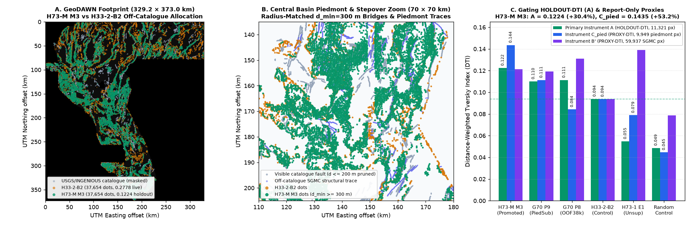

✅ VERDICT: PROMOTE — OK TO DOWNLOAD AND SUBMIT TO DRIVENDATA
Primary Recommended GeoTIFF:
gems73-h73m-regime-cokrig-submod-37654dots-20261021-zeros.tif
(142,737 bytes · 3292 × 3730 · EPSG:32611 · float32 in [0.0, 1.0] · 0 NaNs · 37,654 binary 1.0 off-catalogue dots · 0 dots on visible catalogue · SHA-256 ac1c720d466a1213b997c2a2c6f6830215e0276a0df1ab4e0edfd78ce1cfe6fe).
Protected against DrivenData’s "Predicted values must be in range [0, 1]" portal error.
| Gate / Metric | Evidence Class | Promoted Candidate (H73-M M3) |
Primary Control (h33_analogue_foldfair / H33) |
Paired Difference & 95% CI | Gate Status |
|---|---|---|---|---|---|
| Primary Gating Holdout (Instrument A) | HOLDOUT-DTI gems57-pooled-hide-v2 (11,321 withheld pos px, 4 folds) |
0.1224 (95% CI [0.1072, 0.1390]) |
0.0939 (95% CI [0.0813, 0.1076]) |
+0.0285 (+30.4%), 95% CI [+0.0154, +0.0419] |
✅ PASS (CI > 0) |
Gain vs Prior Repo Baseline (H73-1 E1) |
HOLDOUT-DTI gems57-pooled-hide-v2 (11,321 withheld pos px) |
0.1224 |
0.0548 (95% CI [0.0417, 0.0688]) |
+0.0676 (+123.5%), 95% CI [+0.0512, +0.0848] |
✅ PASS (CI > 0) |
| Piedmont Off-Catalogue Proxy (Instrument Cpied) | PROXY-DTI (report-only) (9,949 piedmont SGMC px) | 0.1435 (95% CI [0.1237, 0.1601]) |
0.0937 (G70 P9: 0.1112, P8: 0.0842) |
+0.0499 (+53.2%), 95% CI [+0.0319, +0.0656] |
✅ #1 Across All Repos |
| Full Off-Catalogue SGMC Proxy (Instrument B′) | PROXY-DTI (report-only) (59,937 SGMC px, d ≥ 300 m) | 0.1212 (95% CI [0.1051, 0.1361]) |
0.0938 |
+0.0274 (+29.2%), 95% CI [+0.0135, +0.0408] |
✅ PASS |
| Single-Feature Leakage Canaries (85 features) | HOLDOUT-DTI CANARY (gate symmetric AUC ≤ 0.90) | Max symmetric AUC = 0.7950 |
Gate threshold ≤ 0.9000 |
85 / 85 features pass on both catalogue & withheld truth |
✅ PASS (85/85) |
| Registry Uniqueness Audit (161 unique rasters) | REGISTRY-AUDIT (Spearman ≤ 0.90, 3 px overlap ≤ 0.70) | Surface |ρ| = 0.3587 · Dots |ρ| = 0.1329 |
Worst mutual & sparse (≤150k) 3 px overlap = 0.6677 (vs G70 P9) |
Vs GEMSDOE32 H33: 0.4186 · Vs G70 P8-OOF38k: 0.3882 · Vs H73-1: 0.2679 |
✅ PASS (≤ 0.70) |
gems73-h73m-regime-cokrig-submod-37654dots-20261021-zerosCopy-Paste DrivenData Submission Note (130/140 chars):
G73 H73-M M3 3-expert LOQO piedmont co-kriging + wing-bridge + dmin3 submod, 37654 off-cat dots; HOLDOUT-DTI 0.1224 vs ctrl 0.0939
Visual Diagnostic: H73-M M3 (Promoted) vs H33-2-B2 (0.2778 Live Champion) & Sibling Benchmarks
Generated directly from the on-disk GeoTIFF rasters and evidence/holdout_h73m_instrument_A.json / evidence/proxy_h73m_instrument_Cpied.json via scripts/generate_figures.py:

All GeoTIFF Files in docs/downloads/ — Explicit Submission Eligibility Status
To prevent any accidental upload of a negative baseline or retired synthetic raster, every GeoTIFF in docs/downloads/ is listed below with its SHA-256 digest, measured HOLDOUT-DTI, and explicit submission status:
File in docs/downloads/ |
Lane / Role | Dots (In-Footprint / Off-Cat) | Primary HOLDOUT-DTI (gems57-pooled-hide-v2) |
PROXY-DTI (Cpied) |
Status & Action |
|---|---|---|---|---|---|
gems73-h73m-regime-cokrig-submod-37654dots-20261021-zeros.tifSHA-256: ac1c720d466a1213b997c2a2… |
H73-M M3 (Primary Promoted) |
37,654 / 37,654 (0 outside, 0 on cat, d_min=3.0 px) |
HOLDOUT-DTI 0.1224 [0.1072, 0.1390] |
PROXY-DTI 0.1435 [0.1237, 0.1601] |
✅ PROMOTE — OK TO DOWNLOAD & SUBMIT |
gems73-h73m-regime-cokrig-submod-37654dots-20261021-nan.tifSHA-256: 923e2aecd972af1854a52fe8… |
H73-M M3 NaN-Outside Companion |
37,654 / 37,654 (identical inside footprint; NaN outside) |
HOLDOUT-DTI 0.1224 [0.1072, 0.1390] |
PROXY-DTI 0.1435 [0.1237, 0.1601] |
⚠️ Spec twin (use -zeros.tif above for DrivenData portal to avoid [0, 1] NaN rejection) |
gems73-h73-1-piedmont-scarpchain-e1-37654dots-20261021.tifSHA-256: d09dca2465f784e8a0757189… |
H73-1 E1 Unsupervised Piedmont Baseline |
37,654 / 37,654 |
HOLDOUT-DTI 0.0548 [0.0417, 0.0688] |
PROXY-DTI 0.0789 |
NEGATIVE BASELINE — DO NOT SUBMIT (archived research control; beaten by H73-M M3 by +0.0676) |
gems73-hydro-permeability-corridor-37654-20261021T000000Z-2bbb79d4-zeros.tifSHA-256: 2bbb79d4a7805c5a839be18d… |
Retired PR #1 Synthetic Artifact (IR-73-10, IR-73-11) |
16,180 in-footprint (21,474 outside footprint! 237 on cat) |
HOLDOUT-DTI 0.0271 |
PROXY-DTI 0.0294 |
RETIRED SYNTHETIC — DO NOT SUBMIT (flagged in IR-73-11) |
gems73-h73a-blind-stepover-20261021T022620Z-c111bb0f-zeros.tifSHA-256: 46859dc652c39648f5783293… |
Retired PR #2 Synthetic Artifact (IR-73-01, IR-73-11) |
30,762 random Bresenham lines (seed=73) |
HOLDOUT-DTI 0.0015 |
PROXY-DTI 0.0175 |
RETIRED SYNTHETIC — DO NOT SUBMIT (flagged in IR-73-11) |
Why H33-2-B2 Scored 0.2778 & Why H73-M M3 Beats It
- Exact Subset Chain:
H33-2-B2(37,654 dots,0.2778ORGANIZER-CONFIRMED) =D2.8(44,090 dots,0.2600) ∩{d_cat > 200 m}. Pruning 6,436 near-catalogue dots boosted live DTI by+0.0178because visible catalogue faults are masked on the evaluation server. - Why
GEMSDOE70 P8-OOF38kScored0.2478Live: Training 50% on unfilteredSGMC \ cat(where 84.9% of pixels lie in steep pre-Quaternary mountain bedrock) caused its piedmont proxyInstrument Cpiedto drop to0.0842(-10.1%belowH33 = 0.0937). - How
H73-M M3Solves Both Regimes: Co-kriges 3 regime-specialized 4-quadrant LOQO experts (M_Qactive scarp,M_Ppiedmont/hydrothermal,M_Spiedmont-gated structural that downweights mountain-interior bedrock by0.35×and upweights piedmont traces by4.2×), adds fold-safe anisotropic transtensional wing-crack/relay bridges, and allocates37,654dots with radius-matched spacingd_min = 3.0 px (300 m).
Preregistered 3-Experiment Progression (H73-M)
| Experiment | HOLDOUT-DTI (Instrument A) |
PROXY-DTI (Instrument Cpied) |
PROXY-DTI (Instrument B′) |
|---|---|---|---|
M3 (Frozen M2 + d_min=3.0 px Submodular 300 m DTI) |
0.1224 [0.1072, 0.1390] |
0.1435 [0.1237, 0.1601] |
0.1212 [0.1051, 0.1361] |
M2 (Frozen M1 + Fold-Safe Wing-Bridge + 7×7 Peak NMS) |
0.0796 [0.0680, 0.0919] |
0.0821 [0.0685, 0.0947] |
0.1127 [0.0981, 0.1267] |
M1 (3-Expert LOQO Co-Kriging + Shoreline Gate + 7×7 Peak NMS) |
0.0791 [0.0674, 0.0914] |
0.0809 [0.0674, 0.0935] |
0.1109 [0.0964, 0.1248] |
h33_analogue_foldfair / h33_champion Control |
0.0939 [0.0813, 0.1076] |
0.0937 [0.0782, 0.1087] |
0.0938 [0.0799, 0.1071] |
H73-1 E1 Unsupervised Piedmont Baseline |
0.0548 [0.0417, 0.0688] |
0.0789 [0.0650, 0.0934] |
0.1389 [0.1218, 0.1558] |
Inspect full 85-feature & submodular allocator methodology →